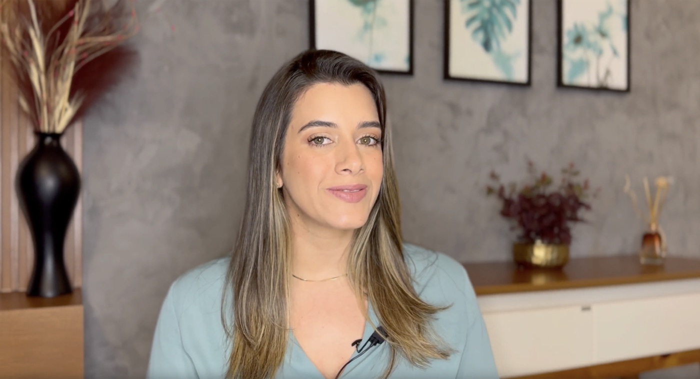

Você acabou de garantir o seu método.
Agora imagine ele montado exatamente só pro seu caso, semana por semana.
Continue rolando
Antes de você entrar, eu quero te mostrar uma coisa que só existe nesta página.
Quando uma mulher senta na minha frente numa consulta, boa parte do meu trabalho não é ensinar exercício. É olhar a história dela, entender em que ponto o corpo está hoje e montar a ordem: o que fazer primeiro, quantos minutos, em quais dias da semana, o que ainda esperar e, principalmente, quando ela pode passar para a próxima fase.
Essa parte do meu trabalho eu consegui colocar dentro de um cronograma. Um cronograma feito a partir das suas respostas, com o seu nome, o seu ponto de partida e os seus horários.
E o que nenhum cronograma consegue prever, a gente resolve ao vivo: uma vez por mês eu abro uma sala e fico ali, com vocês, até a última pergunta ser respondida.
consultório
atendidas
alcançados
O ponto de partida
Cada caso é um caso.
Duas mulheres com a mesma dor podem precisar de caminhos completamente diferentes. O que define o seu é o cruzamento de tudo o que você vai me contar.
Montando o seu cruzamento
Entregável um · Avaliação Sob Medida
Primeiro eu preciso te conhecer.
Você vai passar por uma avaliação minuciosa, dividida em blocos: a sua história, o que o seu corpo consegue e o que ainda não consegue fazer hoje, o que você já tentou antes, a sua rotina e os seus horários, como está a sua relação e onde você quer chegar. É o mesmo levantamento que eu faria com você numa primeira consulta, e é ele que faz o seu cronograma ser seu, e não o de outra mulher.
Alguns dos temas que a avaliação percorre.
Entregável dois · Seu cronograma
A partir das suas respostas, eu monto o seu cronograma.
Semana por semana, do primeiro dia até o último: o dia, o exercício, o tempo e a fase. Cada fase vem com o sinal exato do que você precisa sentir antes de avançar, e com o que fazer na semana em que nada parecer acontecer. Você para de decidir o que fazer e passa só a executar.
Nome e respostas ilustrativos. Cada cronograma é montado a partir da avaliação.
O sinal verde
Ninguém avança porque quer.
Avança quando o corpo dá o sinal. Segure o botão abaixo e veja o que acontece se você soltar antes da hora.
Entregável três · Tira-dúvidas 24 horas
E às 23h de um domingo?
É quase sempre nesse horário que a dúvida aparece. Você vai ter uma inteligência artificial treinada no meu método e no seu cronograma, disponível a qualquer hora. Ela sabe em que semana você está, o que você já fez e o que vem depois.
Entregável quatro · Encontros ao vivo
Uma noite por mês, eu ao vivo, com você.
Todo mês eu abro uma sala ao vivo com um tema novo e fico até a última pergunta ser respondida. Não é aula gravada nem resposta por e-mail: é você me contando onde está, e eu te respondendo na hora, com o seu cronograma na mão.

Um encontro por mês, tema novo em cada um, durante doze meses. Você entra com a câmera fechada se quiser e pergunta pelo chat sem precisar se identificar. Não deu para estar lá na hora? A gravação fica salva para você assistir no seu tempo.
- Você pergunta sobre o seu caso, não sobre um caso qualquer. Diz em que semana está, o que sentiu, onde travou, e sai do encontro sabendo o que fazer na semana seguinte.
- Você escuta o caso das outras. Aquela pergunta que você teria vergonha de fazer aparece na boca de outra mulher, e a resposta serve para você também.
- Cada mês vai fundo em um pedaço do tratamento. Não é revisão do que você já tem: é a camada seguinte, com demonstração e passo a passo.
- Um ponto fixo no calendário. Saber que tem encontro marcado é o que faz a maioria das mulheres continuar quando a rotina aperta.
O que você leva hoje
- Avaliação Sob Medida, os blocos de perguntas que definem o seu ponto de partida, liberada agora
- Aula Inaugural, eu te ensinando a ler e a usar o seu cronograma, também liberada agora
- Seu cronograma personalizado, semana por semana, com os critérios de avanço, em até 3 dias
- Encontros ao vivo comigo, um por mês durante 12 meses, tema novo em cada um, perguntas abertas e gravação salva
- Tira-dúvidas 24h, a inteligência artificial treinada no seu cronograma, durante todo o percurso
O caminho
Como funciona a partir de agora
Hoje
Você garante o seu Plano Sob Medida nesta condição e já faz a avaliação completa, se quiser. Ela fica liberada na hora, junto com a Aula Inaugural.
Assim que você responder
Eu recebo as suas respostas, identifico o seu ponto de partida e monto o seu cronograma.
Em até 3 dias
O seu cronograma chega pronto, com o seu nome, as suas fases e os dias encaixados nos seus horários.
Todo mês, por 12 meses
A gente se encontra ao vivo, com um tema novo, e eu respondo as perguntas de quem estiver lá até acabar.
Plano Sob Medida
Tudo isso, mais os 12 encontros ao vivo, nesta página
12x de R$39,70
ou R$ 397 à vista, uma economia de R$ 400
Fora desta página, o Plano Sob Medida volta ao valor avulso de R$ 797.
Se você preferir seguir sem o plano, tudo bem. O Programa continua seu, inteiro, do mesmo jeito.
Mas se ao ler isto você pensou “eu queria isso já montado pra mim”, é exatamente para isso que o Plano Sob Medida existe.
Te vejo na Aula Inaugural.